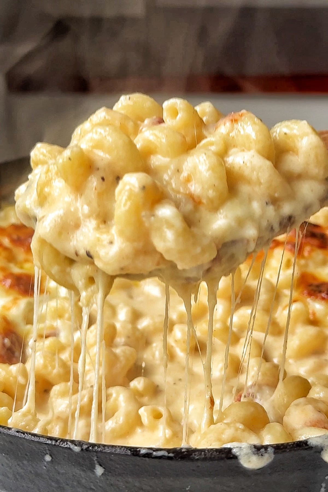

href="../index.html>Home
Description
Fuck all that blue box bullshit and plastic-cheese slathered on shells. Get your instantpot, or whatever, get your cheeses. We're about to make a sopping, gooey mess together.
Ingrediants
- 4 cups water
- 16 oz. macaroni*
- 1 tsp dry mustard powder
- 1 tsp salt
- 1 can (12 fl.oz.) evaporated milk
- 1/3 cup whole milk
- 2 Tbsp unsalted butter
- 2 cups shredded 2% cheddar cheese**
- 1 cup secondary shredded cheese**
*The name of the dish is macaroni and cheese so don't you fucking dare even attempt to make this dish with any other kind of pasta you sick fucking peasant. (though cavatappi or shells can be used in a pinch, never penne).
**a note on the cheeses....use at least two cheeses but experiment with different base cheeses and combinations. Not every experiment will be a home run but even a weak batch is still delicious. I'm serious about the pasta.
Steps
- combine water, pasta, mustard powder, and salt in an electric pressure cooker. Close/lock lid; set to HIGH pressure and cook for 4 minutes (allow up to 10 minutes for pressure to build).
- Release pressure. I have no idea how to do this safely; yanking the lid off will make a large bang but doesn't seem to harm you.
- Try using quick-release method to release pressure, could take up to 5 minutes apparently.
- Switch to LOW Saute mode and stir pasta to separate any clumps.
- Stir evaporated milk, milk, and butter into the pot.
- Add cheeses gradually, stirring constantly until fully melted
- Season salt/pepper to taste